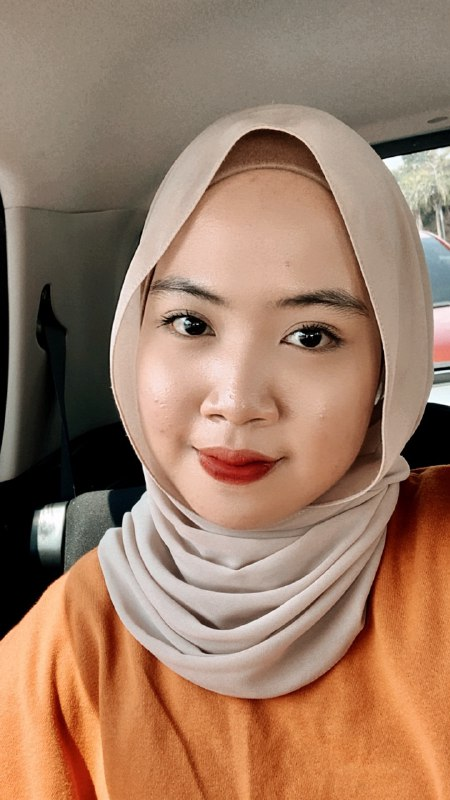

˚ ༘♡ ⋆｡˚ HI EVERYONE ˚ ༘♡ ⋆｡˚
➸ NAME: NUR IRDINA BINTI NOR HELMI
➸ GENDER: FEMALE
➸ RACE: MALAY
➸ NATIONALITY: MALAYSIA
➸ STATE: SELANGOR
➸ HOBBY: LISTENING TO A SONG & COOKING
As a person, I believe life is an art, and I am the artist of my life. I try to keep it full of colors and as cheerful as possible no matter what life throws at me. I am an enthusiast and a person full of curiosity. Curious to know what life is all about and what it holds in the future.
I like to keep a smile on my face no matter what I am going through, and that smile keeps me going. Besides, I was brought up in a multicultural community. Therefore, I am an extrovert, and I like to meet people, I love to experience their lives, cultures, and traditions, which makes me happy and cheerful.
Moreover, I am reliable but very short-tempered. I lose my calm if not understood properly. I get very irritated internally, but that doesn’t show in my behavior. However, I would like to change this character trait a little because my friends and dear ones often do not notice that I have some troubles. Thus, they do not offer help when I need it.
Good or bad, This is me, trying to contemplate the world as it is, revealing its true colors. I believe life is a gift, and it should be treated like one, with love, care, and respect.
VARIOUS SONGS I LOVE 🎶🖤
Why I love the Weeknd songs? The emotions of the listener are reflected in The Weeknd's songs, which combines pop, R&B, and electronic sounds. The listener's own experiences are reflected in his songs, which describe love, heartbreak, and personal challenges. His music forges a deep connection; it's more than just music.
I could have several reasons for loving Little Mix songs! Their music appeals to a wide range of listeners by blending diverse styles, empowering lyrics, and catchy melodies. Little Mix is well-known for spreading positive, empowering, and self-assured themes that connect with listeners on an individual basis. Their vocal prowess and harmonies are particularly striking, captivating listeners with their skill.